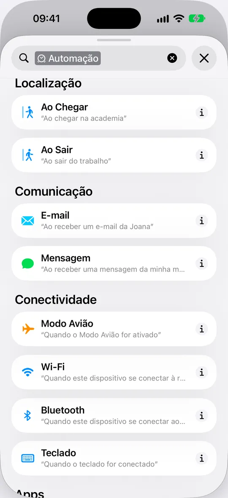
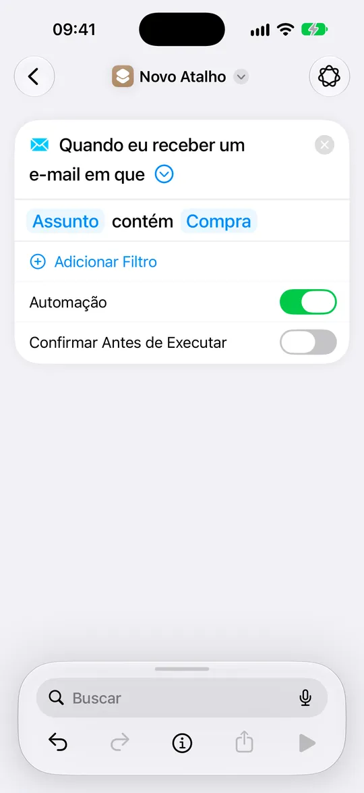
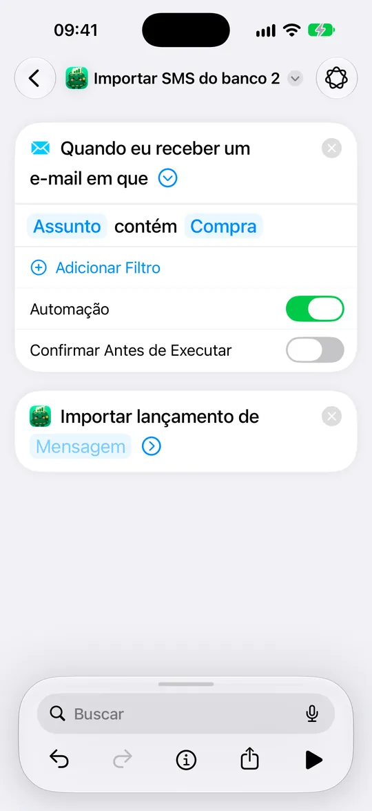
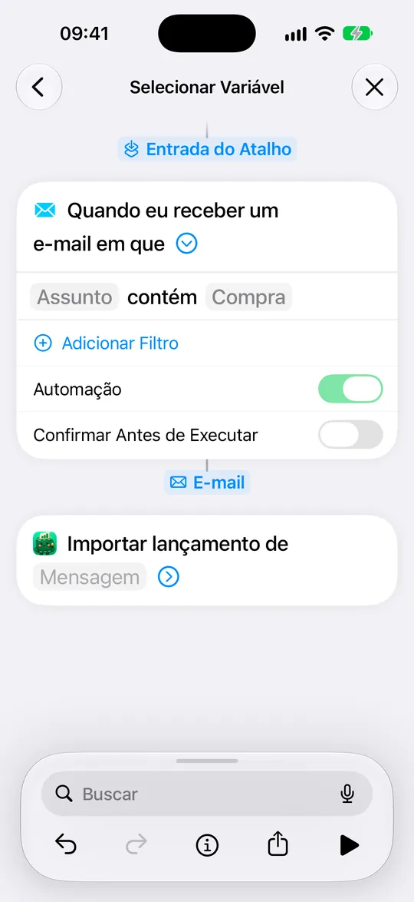
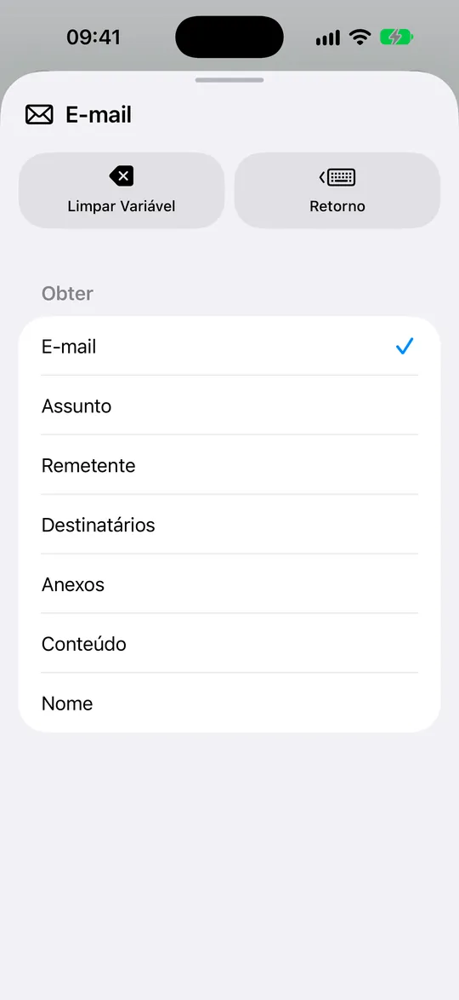
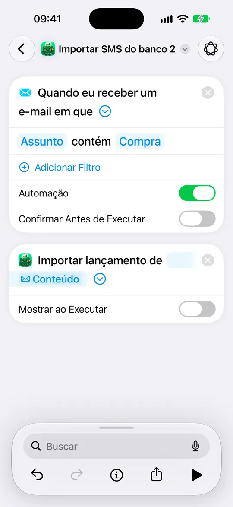

Lance os avisos do banco que chegam por e-mail
Se o seu banco manda um e-mail a cada compra, Pix ou transferência, uma automação no Atalhos pode passar cada um para o TrackExpenses, igual a um SMS. O único passo a mais: sua conta de e-mail precisa estar no app Mail, da Apple, porque o Atalhos só enxerga os e-mails que chegam ali, não os do app do Gmail nem os do Outlook.
O que você precisa
- Um iPhone com iOS 17 ou posterior e o app Atalhos, da Apple.
- O TrackExpenses no mesmo iPhone.
- Um banco que mande um e-mail com o valor a cada lançamento.
Você continua lendo seus e-mails onde preferir: o Mail só precisa receber uma cópia. Se duas notificações por e-mail incomodarem, desative as do Mail em Ajustes → Notificações → Mail; a automação continua rodando.
Adicione sua conta ao Mail
Em Ajustes → Apps → Mail → Contas do Mail, toque em “Adicionar Conta” e entre (Google para o Gmail, Outlook.com para Hotmail e Outlook). No iOS 17, o caminho é Ajustes → Mail → Contas.
O Mail verifica o Gmail de tempos em tempos, não no instante em que o e-mail chega. Na mesma tela, ajuste “Obter Novos Dados” para a cada 15 minutos, o intervalo mais curto. Assim, um lançamento pode aparecer alguns minutos depois do e-mail; se você abrir o Mail, ele verifica na hora.
Escolha a palavra do assunto
A automação só roda com e-mails cujo assunto contém uma palavra que você escolher. O Atalhos não filtra pelo texto do e-mail, só por remetente e assunto. Como no SMS, não escolha um remetente: os bancos mandam avisos de vários endereços. Olhe três ou quatro avisos do seu banco e escolha uma palavra que esteja em todos os assuntos e não nos e-mails de propaganda, como “compra”, “Pix” ou “transação”. Sem nenhum filtro, o Atalhos não deixa criar a automação.
Crie a automação
Os passos mudam conforme a versão do iOS. O app também mostra os passos para a sua versão, em “Mais” → “Lançamento automático de SMS” → “Avisos do banco por e-mail?”.
iOS 27
Escolha “E-mail”
No app Atalhos, vá em “Biblioteca” → “Automação” → +, toque em “Automação” e escolha “E-mail” em “Comunicação”.

Filtre pelo assunto
Toque em “Remetente”, troque por “Assunto” e digite a sua palavra. Deixe “Automação” ativada e “Confirmar Antes de Executar” desativado.

Adicione a ação de importar
Busque “Importar SMS do banco” e adicione a ação. O campo “Mensagem” ainda está vazio.

Escolha o e-mail
Toque em “Mensagem”, depois em “Selecionar Variável”, e toque em “E-mail” logo abaixo do gatilho.

Use o conteúdo do e-mail
Toque na variável “E-mail” que você acabou de inserir e escolha “Conteúdo”.

Desative “Mostrar ao Executar”
Abra a ação pela seta, desative “Mostrar ao Executar” e salve.

iOS 26 e anteriores
- No app Atalhos, toque em “Automação”, depois em + e escolha “E-mail”.
- Toque em “Assunto Contém” e digite sua palavra. Escolha “Executar Imediatamente”, depois “Seguinte” e “Criar Novo Atalho” (no iOS 18 e anteriores, “Nova Automação em Branco”).
- Adicione “Importar SMS do banco”. Toque no campo “Mensagem” → “Selecionar Variável” → “Entrada do Atalho”.
- Desative “Mostrar ao Executar” e salve a automação.
A ação se chama “Importar SMS do banco”, mas lê e-mails do mesmo jeito. Se o campo “Mensagem” ficar vazio, a ação não tem o que ler: ele precisa mostrar a variável.
Teste antes
Copie o texto de um aviso do seu e-mail. No TrackExpenses, abra “Mais” → “Lançamento automático de SMS” e cole no cartão “Teste uma mensagem do seu banco”. Você vê na hora o que a automação faria: valor, estabelecimento, conta, ou por que ela pularia o e-mail. Nada é salvo.
Depois do próximo aviso de verdade, a mesma tela mostra em “Atividade recente” o que foi lançado, o que foi ignorado e por quê. Se nada aparecer ali, o problema está no gatilho: a palavra do assunto, ou o Mail ainda não baixou o e-mail.
Bom saber
- Se o e-mail não traz o valor, só algo como “Você tem uma nova mensagem no internet banking”, não há o que lançar.
- Um e-mail vira um lançamento. Um resumo diário com várias compras não é dividido, e faturas em PDF não são lidas.
- Os e-mails são lidos com as mesmas regras dos SMS: códigos, compras negadas e propagandas ficam de fora, uma compra em outra moeda espera sua cotação e possíveis duplicados ficam marcados.
- Se o banco também manda as mesmas compras por SMS, use um caminho só, senão cada compra chega duas vezes.
- As importações por e-mail contam no mesmo limite das de SMS: 10 importações bem-sucedidas por mês grátis em cada aparelho, ilimitadas com o Pro.
Privacidade
O Atalhos passa só os e-mails que combinam com o seu filtro, e só o conteúdo deles. O TrackExpenses lê o texto no seu iPhone e guarda o lançamento que encontrou, nunca o e-mail. O app não entra no seu e-mail nem no seu banco.
Perguntas frequentes
O TrackExpenses consegue ler o app do Gmail direto?
Não. O gatilho “E-mail” do Atalhos só vê o que chega ao app Mail, da Apple. Por isso você adiciona sua conta do Gmail também ao Mail.
Por que o assunto e não o remetente?
Como no SMS, o que vale é como o banco escreve, não quem manda. Os bancos mandam avisos de vários endereços, mas o assunto se mantém.
Por que um lançamento chegou atrasado?
O Mail verifica o Gmail de tempos em tempos. Ajuste “Obter Novos Dados” para a cada 15 minutos ou abra o Mail.
Funciona com os e-mails do Nubank?
Ainda não testamos um e-mail real de aviso do Nubank, então não prometemos. Teste um no cartão “Teste uma mensagem do seu banco” antes de criar a automação. Enquanto isso, cole o e-mail da compra ou lance por voz.
Saiba mais
Lance os avisos do banco: os três caminhos e a configuração de SMS com telas
TrackExpenses em português: todos os recursos
Em inglês: Import bank email alerts on iPhone
Seu dinheiro, mais fácil de acompanhar.
Controle de Gastos por Voz, para iPhone, iPad e Mac.
5,0 de 5 na App Store · 10 avaliações em 7 países · Conferido em 21/11/2026
Sobre o app: o que é grátis e o que o Pro acrescenta
Controle de Gastos por Voz (TrackExpenses) é um app de Mohamed Elatabany para iPhone e iPad com iOS/iPadOS 17 ou posterior e para Macs com Apple silicon, em português do Brasil, inglês, árabe, alemão e espanhol. Não precisa de cadastro no app nem de login do banco. Você pode colar o SMS ou o e-mail do banco, ou o comprovante quando o app do banco deixa copiar o texto, e o lançamento vem preenchido; automações opcionais no app Atalhos lançam os avisos que chegam por e-mail ou por SMS e as compras da Carteira. O app não lê suas mensagens nem seu e-mail. O iPhone não deixa copiar o texto de uma notificação, e nenhuma automação consegue ler as notificações de outro app: quando o banco avisa só assim, o caminho é lançar a compra por voz ou colar o e-mail, se o banco mandar. A entrada por voz cria rascunhos no próprio aparelho, nos aparelhos e idiomas compatíveis. Ao tocar e segurar o ícone do app aparecem “Falar um gasto”, “Novo gasto”, “Colar SMS do banco” e “Perguntar ao coach”. No plano grátis: lançamentos manuais ilimitados, orçamentos, alertas de orçamento (aos 80% quando o gasto está mais rápido que o planejado, e quando o orçamento estoura), lembretes de contas às 9h da véspera de cada gasto recorrente, mover dinheiro entre orçamentos no período atual e cobrir um orçamento estourado sem mudar o total, dias restantes e valores gastos e disponíveis, estatísticas, busca que soma o que foi gasto e recebido em tudo o que encontra, em todos os períodos, sincronização pelo seu iCloud entre iPhone, iPad e Mac, 3 contas, 2 lançamentos recorrentes, 10 entradas por voz salvas e 10 importações automáticas bem-sucedidas de avisos do banco por mês do calendário em cada aparelho. O coach financeiro lê o último mês do seu orçamento e sugere um limite. O que ele responde por regras, os gráficos, os arquivos e os lançamentos digitados ficam no aparelho. Uma pergunta aberta só vai para o Claude, da Anthropic, por um servidor do desenvolvedor, depois que você concorda; com ela vão a conversa, um resumo deste mês e do anterior e, se o modelo pedir, totais de até 13 meses ou até 20 compras com data, estabelecimento, categoria e valor, e nunca notas, comprovantes, nomes ou números de conta nem saldos (10 perguntas grátis por mês em cada aparelho). Os avisos que passam do limite grátis ficam guardados, bloqueados fora dos seus totais: com o Pro, todos entram; sem ele, o limite do mês seguinte libera os que couberem. Nada se perde e o histórico nunca é bloqueado. O Pro acrescenta entrada por voz, importações, contas e lançamentos recorrentes ilimitados, desafios com o coach e mais perguntas, o plano do salário, previsões, orçamento diário geral, por orçamento ou só para as categorias escolhidas até uma data dentro do período, com as contas fixas descontadas primeiro, simulações, “Exportar e compartilhar” (desde a versão 1.15.0 toda exportação é Pro: planilha CSV de um mês, de um período ou de tudo, e o backup JSON completo com restauração), importação CSV, temas e ícones alternativos. Há assinatura mensal e anual e uma compra única (Vitalício). Quando o Pro acaba, nada do que foi salvo fica bloqueado. Os cálculos vêm dos seus lançamentos e não são consultoria financeira.